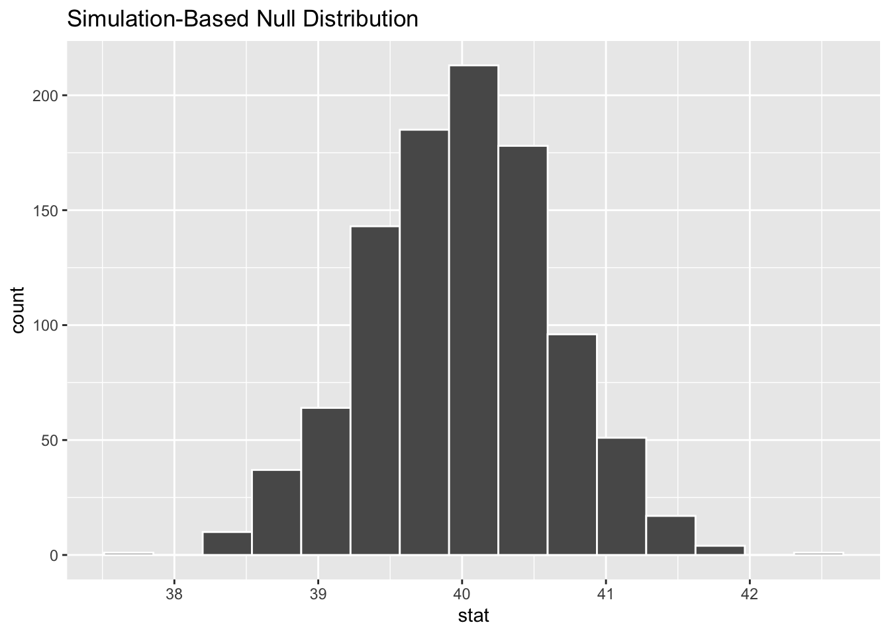
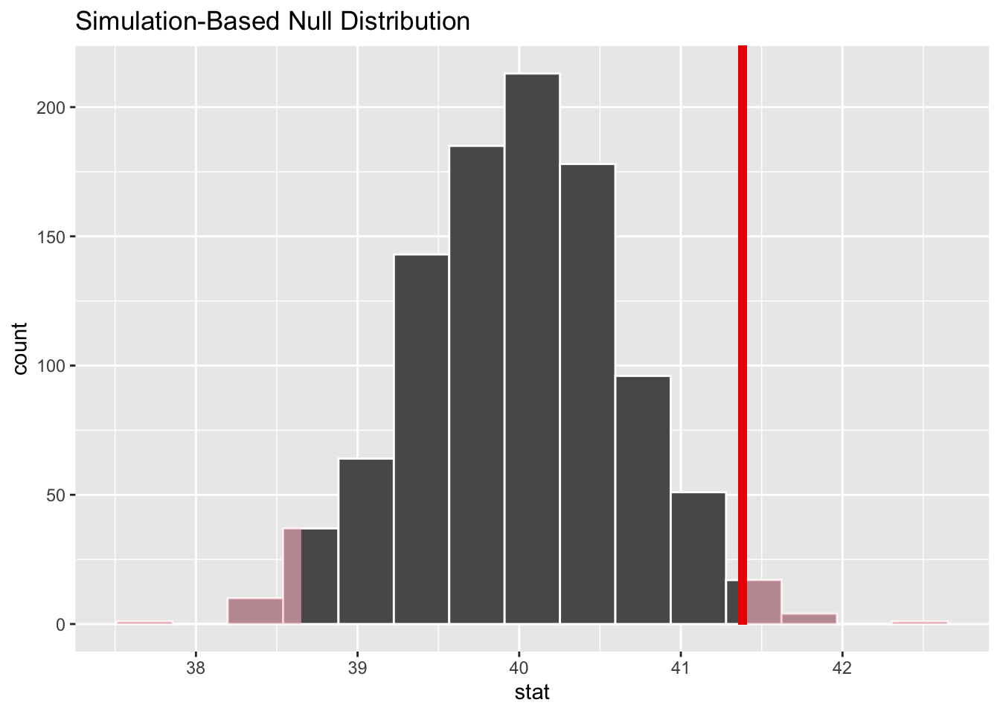
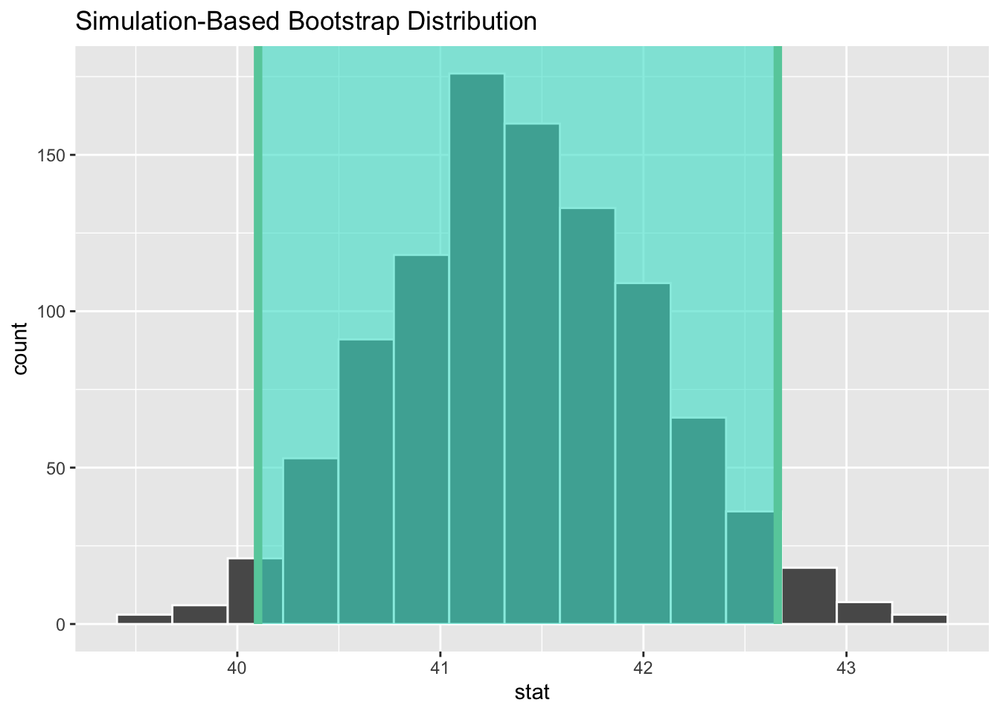

library(infer)
library(dplyr)Infer Package Intro
I will explore {infer} Package.
Explore Data
glimpse(gss)
#> Rows: 500
#> Columns: 11
#> $ year <dbl> 2014, 1994, 1998, 1996, 1994, 1996, 1990, 2016, 2000, 1998, 20…
#> $ age <dbl> 36, 34, 24, 42, 31, 32, 48, 36, 30, 33, 21, 30, 38, 49, 25, 56…
#> $ sex <fct> male, female, male, male, male, female, female, female, female…
#> $ college <fct> degree, no degree, degree, no degree, degree, no degree, no de…
#> $ partyid <fct> ind, rep, ind, ind, rep, rep, dem, ind, rep, dem, dem, ind, de…
#> $ hompop <dbl> 3, 4, 1, 4, 2, 4, 2, 1, 5, 2, 4, 3, 4, 4, 2, 2, 3, 2, 1, 2, 5,…
#> $ hours <dbl> 50, 31, 40, 40, 40, 53, 32, 20, 40, 40, 23, 52, 38, 72, 48, 40…
#> $ income <ord> $25000 or more, $20000 - 24999, $25000 or more, $25000 or more…
#> $ class <fct> middle class, working class, working class, working class, mid…
#> $ finrela <fct> below average, below average, below average, above average, ab…
#> $ weight <dbl> 0.8960034, 1.0825000, 0.5501000, 1.0864000, 1.0825000, 1.08640…Specifying Response specify()
Specify response and explanatory variable as formula or arguments.
Continuous Response
age (num) ~ partyid (fct)
gss_spec_age_partyid <- gss %>%
specify(age ~ partyid)
#> Dropping unused factor levels DK from the supplied explanatory variable 'partyid'.
# Object Type
sloop::otype(gss_spec_age_partyid)
#> [1] "S3"
# Class
class(gss_spec_age_partyid)
#> [1] "infer" "tbl_df" "tbl" "data.frame"
# Print
gss_spec_age_partyid
#> Response: age (numeric)
#> Explanatory: partyid (factor)
#> # A tibble: 500 × 2
#> age partyid
#> <dbl> <fct>
#> 1 36 ind
#> 2 34 rep
#> 3 24 ind
#> 4 42 ind
#> 5 31 rep
#> 6 32 rep
#> 7 48 dem
#> 8 36 ind
#> 9 30 rep
#> 10 33 dem
#> # … with 490 more rowsCategorical Response
specifying for inference on proportions
you will need to use the success argument to specify which level of your response variable is a success.
gss %>%
specify(response = college, success = "degree")
#> Response: college (factor)
#> # A tibble: 500 × 1
#> college
#> <fct>
#> 1 degree
#> 2 no degree
#> 3 degree
#> 4 no degree
#> 5 degree
#> 6 no degree
#> 7 no degree
#> 8 degree
#> 9 degree
#> 10 no degree
#> # … with 490 more rowsDeclare the NULL Hypothesis
declare a null hypothesis using hypothesize().
null: “independence” or “point”.
Test Independence
If the null hypothesis is that the mean number of hours worked per week in our population is 40, we would write:
gss %>%
specify(college ~ partyid, success = "degree") %>%
hypothesize(null = "independence")
#> Dropping unused factor levels DK from the supplied explanatory variable 'partyid'.
#> Response: college (factor)
#> Explanatory: partyid (factor)
#> Null Hypothesis: independence
#> # A tibble: 500 × 2
#> college partyid
#> <fct> <fct>
#> 1 degree ind
#> 2 no degree rep
#> 3 degree ind
#> 4 no degree ind
#> 5 degree rep
#> 6 no degree rep
#> 7 no degree dem
#> 8 degree ind
#> 9 degree rep
#> 10 no degree dem
#> # … with 490 more rowsTest Point Estimate
gss %>%
specify(response = hours) %>%
hypothesize(null = "point", mu = 40)
#> Response: hours (numeric)
#> Null Hypothesis: point
#> # A tibble: 500 × 1
#> hours
#> <dbl>
#> 1 50
#> 2 31
#> 3 40
#> 4 40
#> 5 40
#> 6 53
#> 7 32
#> 8 20
#> 9 40
#> 10 40
#> # … with 490 more rowsgenerate() NULL distribution
set.seed(1)
gss %>%
specify(response = hours) %>%
hypothesize(null = "point", mu = 40) %>%
generate(reps = 1000, type = "bootstrap")
#> Response: hours (numeric)
#> Null Hypothesis: point
#> # A tibble: 500,000 × 2
#> # Groups: replicate [1,000]
#> replicate hours
#> <int> <dbl>
#> 1 1 46.6
#> 2 1 43.6
#> 3 1 38.6
#> 4 1 28.6
#> 5 1 38.6
#> 6 1 38.6
#> 7 1 6.62
#> 8 1 78.6
#> 9 1 38.6
#> 10 1 38.6
#> # … with 499,990 more rowsCalculate Summary Stats
find the point estimate
obs_mean <- gss %>%
specify(response = hours) %>%
calculate(stat = "mean")
obs_mean
#> Response: hours (numeric)
#> # A tibble: 1 × 1
#> stat
#> <dbl>
#> 1 41.4generate a null distribution
null_dist <- gss %>%
specify(response = hours) %>%
hypothesize(null = "point", mu = 40) %>%
generate(reps = 1000, type = "bootstrap") %>%
calculate(stat = "mean")
null_dist
#> Response: hours (numeric)
#> Null Hypothesis: point
#> # A tibble: 1,000 × 2
#> replicate stat
#> <int> <dbl>
#> 1 1 40.5
#> 2 2 40.1
#> 3 3 39.1
#> 4 4 40.3
#> 5 5 38.8
#> 6 6 39.6
#> 7 7 40.2
#> 8 8 40.4
#> 9 9 40.1
#> 10 10 40.6
#> # … with 990 more rowsVisualize Null Dist
null_dist %>%
visualize()
Where does our sample’s observed statistic lie on this distribution? We can use the obs_stat argument to specify this.
null_dist %>%
visualize() +
shade_p_value(obs_stat = obs_mean, direction = "two-sided")
P-value
get a two-tailed p-value
p_value <- null_dist %>%
get_p_value(obs_stat = obs_mean, direction = "two-sided")
p_value
#> # A tibble: 1 × 1
#> p_value
#> <dbl>
#> 1 0.038Confidence Interval
# generate a distribution like the null distribution,
# though exclude the null hypothesis from the pipeline
boot_dist <- gss %>%
specify(response = hours) %>%
generate(reps = 1000, type = "bootstrap") %>%
calculate(stat = "mean")
# start with the bootstrap distribution
ci <- boot_dist %>%
# calculate the confidence interval around the point estimate
get_confidence_interval(point_estimate = obs_mean,
# at the 95% confidence level
level = .95,
# using the standard error
type = "se")
ci
#> # A tibble: 1 × 2
#> lower_ci upper_ci
#> <dbl> <dbl>
#> 1 40.1 42.7boot_dist %>%
visualize() +
shade_confidence_interval(endpoints = ci)